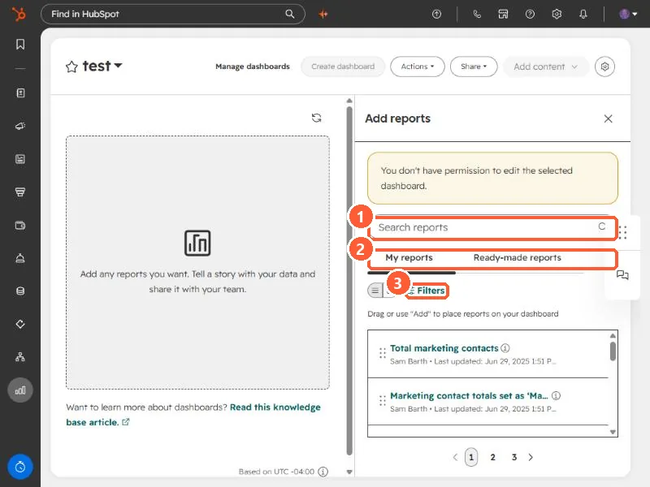

Short answer
Open a dashboard, click Add content, and the Add reports panel opens. It has two tabs, My reports and Ready-made reports, a search box, and filters. Drag a report onto the dashboard or click Add. If the panel says you do not have permission to edit the selected dashboard, you are not an owner or editor of it, and the fix is access, not the report.
1. Open Add reports
Open a dashboard from Dashboards and click Add content. The panel slides in on the right. The empty dashboard on the left says to add any reports you want and tell a story with your data.


2. Find the report
- My reports lists the reports in your account, with the owner and when each was last updated.
- Ready-made reports are prebuilt reports from HubSpot.
- The search box and Filters narrow the list. There are several pages of reports even in a small portal.
3. Place it
The panel says to drag a report or use Add to place it on your dashboard. Drag where you want it. You can rearrange afterward.
4. If the panel says you do not have permission
At the top of the panel in my demo is a yellow message: you do not have permission to edit the selected dashboard. That login is a viewer on this dashboard, so it cannot add anything. Ask the owner or a Super Admin for edit access, or build your own dashboard. See dashboard settings for the access levels.
If you cannot create reports at all, that is a permission too. See which reports HubSpot can build.